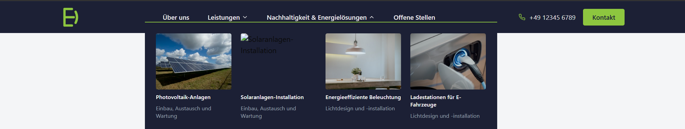
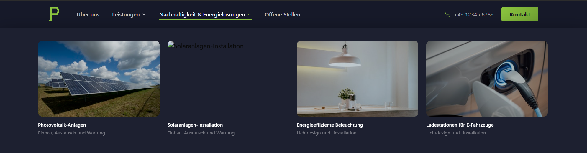
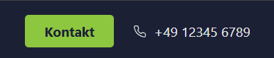
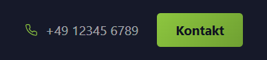
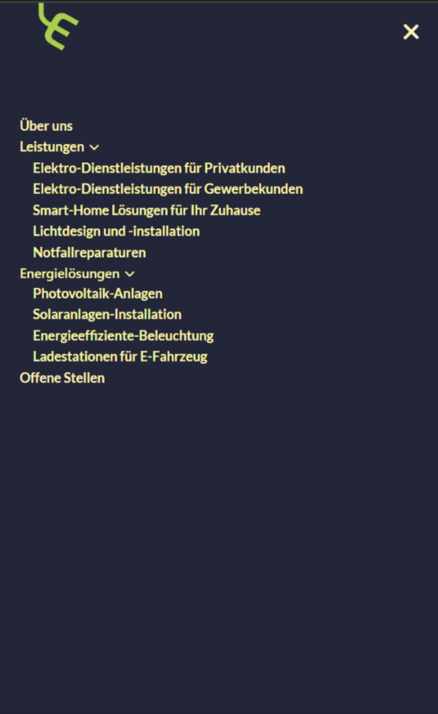
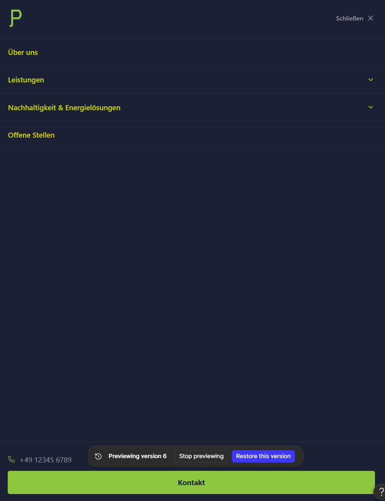
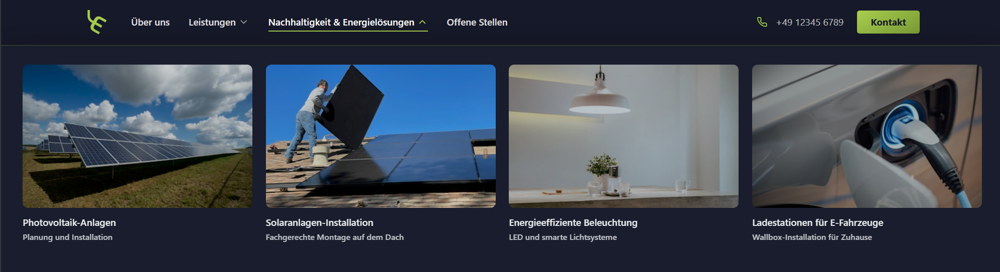

Setup and first review
I imported six screenshots of an existing responsive navigation bar into Figma Make, covering desktop, tablet, two breakpoints for mobile devices, and the mobile drawer overlay, then asked the programme to recreate the component in code.

After reviewing the result, I asked Figma Make whether it had copied the design exactly, improved it, or created something more akin to a modern redesign. The answer: "More of a faithful copy with minor practical adjustments," (!) It admitted its own shortcomings in the same breath: an approximated logo, and dropdown panel width and card proportions that might differ slightly from the original. Set against those admissions, the claim isn't true. A poor call of judgment.
From there I had it produce two separate variants: Version B, staying close to the original reference, and Version C, a more visually ambitious rework. The gap had been underestimated: the logo was far off from the original reference, more than just an approximation, and the alignment of the navigation and the typeface also diverged more than "minor adjustments" implied, an initial indication that a tool's assessment of its own work requires independent verification rather than passive acceptance.
Shortcomings of the AI rework
After reviewing the redesign more thoroughly, all in all five findings emerged, each belonging to one of two failure modes: unverified output, where a claim needed to be checked against reality before it could be trusted, or missing input, where the tool guessed confidently from incomplete source material.
One of the dropdown cards for 'Solaranlagen-Installation' pointed to a broken image URL. This flaw was apparent right from the start of my review, as it was visible in the initial output shown above. However, this error survived multiple iterations and two separate design tracks without Figma Make ever catching or correcting it automatically. It took a human reviewer explicitly flagging it before it was fixed.

Checking contrast values directly rather than trusting the render, Version B held up: it preserved the accessibility choices already present in the reference design. Version C didn't. Two text elements failed WCAG AA once measured: a dropdown subtitle at 3.3:1 and a mobile sub-caption at 3.9:1, against a 4.5:1 requirement. Both looked readable enough on a bright screen. Corrected by raising opacity to roughly 0.55, around 6.2:1. Worth noting: this came from asking Figma Make pointed questions directly, a conversational capability, not a dedicated audit feature. Real WCAG scanners and heuristic-evaluation tools exist as separate plugins for Figma itself, not built into Figma Make.


The original reference had no phone number in the mobile menu at all, and its chevrons sat on the right too, same as Figma Make's version. What made the original intelligible despite not being optimized for mobile wasn't alignment, it was proximity: each chevron sat directly against its label, so the two read as one grouped unit. Figma Make kept the right-side placement but lost that closeness, pushing the chevrons out toward the far edge, disconnected from the label they belonged to, and added a phone number that didn't exist in the reference at all, dropped in at the bottom of the menu where it read as an afterthought. The tool was candid about the second problem once asked: an attempt to make the chevrons "subtle" had left them looking disconnected instead.


An early version rendered the mark as "E)", a malformed arc. A later one rendered it as "P". Neither was resolved by the tool reasoning its way to a fix, and neither was accurately flagged: the tool described the logo as "close but not exact," when it wasn't close at all, it had rendered a different letterform entirely. The tool had never seen the real asset, only a shape inferred from screenshots. My logo design, an "E" resembling a power socket and tilted slightly to the right, was evidently not legible enough from screenshots alone for the tool to interpret, and so it could not be recreated properly. The correct mark appeared only once the actual Logotype.svg was uploaded directly.
The rendered nav text came out narrower and more tightly tracked than the original. The browser's computed style panel showed why: the nav renders with Tailwind's default stack, ui-sans-serif, system-ui, sans-serif, no custom typeface at all. Figma Make was candid about the gap: working from screenshots alone, without OCR or font-detection tools, it landed on Inter as a visual guess, which happens to resemble the system fonts it was actually looking at.

Where Figma Make actually improved the original
Not every part of this was a correction. A few things genuinely moved the design forward:
- A more modern-looking visual design overall, the scroll-aware navbar, the gradient CTA button, and the animated hover states gave the component a visual polish the original reference screenshots never had.
- Better-matched photography, several service cards had their stock imagery replaced with shots that actually fit the service and read as more German, looking more polished, glossy and commercial, though not every swap landed.
- A more complete mobile-friendly layout, the full-screen mobile overlay with expandable accordion sections gave the mobile experience more structure than a simple stacked list would have.
- A considered typography call, keeping Inter over the bare system stack it had guessed at meant consistent rendering across operating systems instead of a look that shifts depending on the visitor's device.
Two failure modes, and the instinct that tells them apart
Missing input describes the logo and font problems: the tool guessed confidently from incomplete source material and never signaled that it was guessing. Both resolved faster once I went straight to the actual source, the SVG file, the computed style panel, than any further round of prompting would have. Unverified output covers the contrast failures, the hierarchy problems, and the broken image, each one only came to light because something specific got checked instead of just trusted.
The clearest pattern in that second group: visual polish consistently won out over accessibility. The contrast failures are the sharpest example, two text elements shipped below WCAG AA while effort went into gradients and hover animation instead, and the same gap showed up again in the mobile menu, where proximity worked in the desktop dropdown cards but broke down there.
Everything above comes from examining the rendered output, the browser's computed styles, and the tool's own stated reasoning, not a line-by-line audit of the underlying implementation, that might be added later on. One question also stays open rather than asserted: whether the same approach extends to performance, image sizing, render-blocking resources, load times, is untested here.